Основные концепции
{kind=link}
Эволюция инфраструктуры

Физические сервера
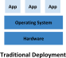
Физические сервера
Минусы
борьба приложений за ресурсы
проблема вертикального масштабирования
неэффективное использование ресурсов
Виртуализация
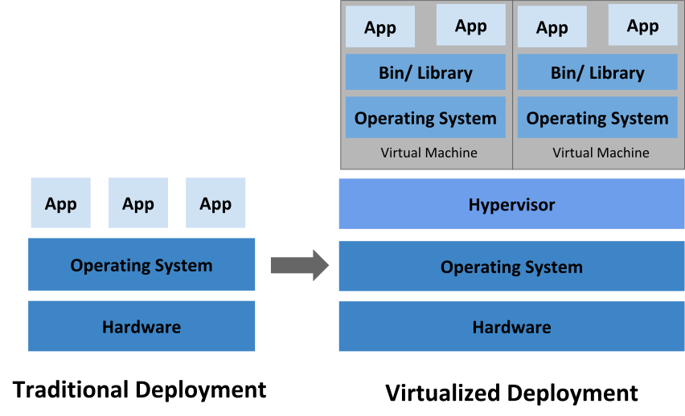
Виртуализация
ресурсы ограничены параметрами виртуальной машины
простота вертикального масштабирования
возможность более плотного размещения
Контейнеры
Зачем?
Отличие контейнеров от ВМ
изоляция на уровне ОС
запускается только нужное приложение
минимальные накладные расходы
DevOps практики
гибкость создания и развертывания с docker image
одинаково работает при разработке, тестировании и на проде
удобство использования в CI/CD
хорошо подходит для микросервисной архитектуры
Эволюция архитектуры приложений
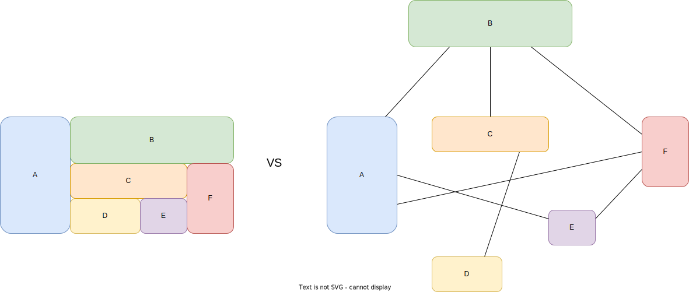
Монолитная архитектура
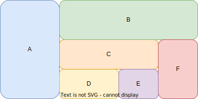
Монолитная архитектура
изменения одного компонента требуют редеплой всего приложения
требуются мощные сервера, проблема масштабирования
нельзя масштабировать только нужные компоненты
отказ одного компонента ведет к полной неработоспособности
сложная структура проекта, тяжело заменять компоненты
Микросервисная архитектура
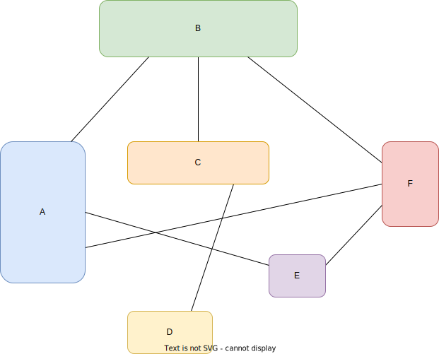
Микросервисная архитектура
можно обновлять независимо
меньше требования к ресурсам, легко масштабировать горизонтально
можно масштабировать только необходимые компоненты
при отказе затрагивает только связанные компоненты
разработка на разных языках и технологиях
Kubernetes
размещение и жизненный цикл контейнеров
масштабирование и распределение нагрузки
конфигурация через декларативное описание
Основные компоненты
control-plane
node components

Control Plane
обработка операций взаимодействия с кластером
управления размещением нагрузки по нодам
отслеживание ресурсов и событий в кластере и их обработка
Control Plane
kube-apiserver

etcd
Control Plane
kube-scheduler
kube-controller-manager
cloud-controller-manager

Отказоустойчивый кластер

Node
kubelet

kube-proxy
container runtime

API Kubernetes
Объект в kubernetes
Конфигурация и состояние нод кластера(Node)
Конфигурация и состояние развертывания приложения(Deployment)
Конфигурация данных для приложения(ConfigMap)
Объект в kubernetes
apiVersion: v1
kind: Pod
metadata:
creationTimestamp: null
labels:
run: nginx
name: nginx
spec:
containers:
- image: nginx
name: nginx
resources: {}
dnsPolicy: ClusterFirst
restartPolicy: Always
status: {}REST
$ kubectl get --raw /
{
"paths": [
"/.well-known/openid-configuration",
"/api",
"/api/v1",
"/apis",
"/apis/",
"/apis/apps",
"/apis/apps/v1",
...
Groups
/api/v1 - core группа, соответствует
apiVersion: v1/apis/$GROUP/$VERSION - именованные группы, соответствует
apiVersion: $GROUP/$VERSION
Scope
# для cluster-wide ресурсов
"/apis/${GROUP}/${VERSION}/${RESOURCE}"
(/apis/apiregistration.k8s.io/v1/apiservices)
# для namespaced ресурсов
"/apis/${GROUP}/${VERSION}/namespaces/${NAMESPACE}/${RESOURCE}"
(/apis/apps/v1/namespaces/default/deployments)Get Object
"/apis/$GROUP/$VERSION/namespaces/$NAMESPACE/$RESOURCE/$NAME"Pod
{kind=link}
Pod - это минимальная единица развертывания
один или несколько контейнеров на одной ноде
общая сеть
общее хранилище
общий набор параметров
apiVersion: v1
kind: Pod
metadata:
name: nginx
spec:
containers:
- name: nginx
image: nginx:1.14.2
ports:
- containerPort: 80$ kubectl apply -f pod.yamlНесколько контейнеров

apiVersion: v1
kind: Pod
metadata:
name: nginx
spec:
containers:
- name: nginx
image: nginx:1.14.2
volumeMounts:
- mountPath: /opt/nginx/conf
name: conf
- name: reloader
image: config-reloader:1.2.3
volumeMounts:
- mountPath: /opt/nginx/conf
name: conf
volumes:
- name: conf
configMap:
name: confЖизненный цикл
Pod Phases
Pending - под создан, но не назначен на ноду
Running - под назначен и все контейнеры запущены
Succeeded - все контейнеры успешно завершены
Failed - все контейнеры завершены, но хотя бы один неуспешно
Unknown - не удалось определить статус пода
Pod Conditions
PodScheduled - под назначен на ноду
ContainersReady - все контейнеры пода подготовлены
Initialized - все инит контейнеры в поде выполнились успешно
Ready - под готов принимать запросы
Container states
Waiting - подготовительные операции для старта
Running - контейнер запустился и работает
Terminated - контейнер завершился
Container restart policy
Always - при любом завершении контейнера
OnFailure - при некорректном завершении
Never - никогда не перезапускать
Container hooks
PostStart - запускается сразу после создания контейнера
PreStop - запускается непосредственно перед завершением контейнера
Container probes
exec - выполняет команду внутри контейнера
httpGet - выполняет HTTP GET запрос по IP пода
tcpSocket - выполняет TCP проверку по IP и порту
grpc - выполняет вызов удаленной процедуры по протоколу gRPC
Container probes
livenessProbe - определяет, что контейнер работает
readinessProbe - определяет, что контейнер готов принимать запросы
startupProbe - определяет, что приложение в контейнере запустилось
Pod status
status:
conditions:
- lastProbeTime: null
lastTransitionTime: "2023-03-03T14:38:28Z"
status: "True"
type: Initialized
- lastProbeTime: null
lastTransitionTime: "2023-03-03T14:39:31Z"
status: "True"
type: Ready
- lastProbeTime: null
lastTransitionTime: "2023-03-03T14:39:31Z"
status: "True"
type: ContainersReady
- lastProbeTime: null
lastTransitionTime: "2023-03-03T14:38:28Z"
status: "True"
type: PodScheduled
containerStatuses:
- containerID: cri-o://83ae1cecc32ff20bc915438c265bae638b8741c371cd4b3006cbbfbf1aeb255c
image: docker.io/library/nginx:latest
imageID: docker.io/library/nginx@sha256:3f13b4376446cf92b0cb9a5c46ba75d57c41f627c4edb8b635fa47386ea29e20
lastState: {}
name: nginx
ready: true
restartCount: 0
started: true
state:
running:
startedAt: "2023-03-03T14:39:31Z"
hostIP: 172.18.0.3
phase: Running
podIP: 10.244.2.5
podIPs:
- ip: 10.244.2.5
qosClass: Burstable
startTime: "2023-03-03T14:38:28Z"Pod status
$ k get po
NAME READY STATUS RESTARTS AGE
nginx 1/1 Running 0 3d17hPod termination
Конфигурация
$ # kubectl explain pod.<field>
$ kubectl explain pod.spec.containers.image
KIND: Pod
VERSION: v1
FIELD: image <string>
DESCRIPTION:
Docker image name. More info:
https://kubernetes.io/docs/concepts/containers/images This field is
optional to allow higher level config management to default or override
container images in workload controllers like Deployments and StatefulSets.Scheduling
apiVersion: v1
kind: Pod
metadata:
name: nginx
spec:
nodeName: kind-worker
containers:
- name: nginx
image: nginxScheduling
apiVersion: v1
kind: Pod
metadata:
name: nginx
spec:
nodeSelector:
kubernetes.io/hostname: kind-worker
containers:
- name: nginx
image: nginxScheduling
apiVersion: v1
kind: Pod
metadata:
name: nginx
spec:
affinity:
nodeAffinity:
requiredDuringSchedulingIgnoredDuringExecution:
nodeSelectorTerms:
- matchExpressions:
- key: kubernetes.io/hostname
operator: In
values:
- kind-worker
containers:
- name: nginx
image: nginxPod Lifecycle
apiVersion: v1
kind: Pod
metadata:
name: nginx
spec:
restartPolicy: Never
terminationGracePeriodSeconds: 5
activeDeadlineSeconds: 10
containers:
- image: nginx
name: nginxPod Volumes
apiVersion: v1
kind: Pod
metadata:
name: nginx
spec:
containers:
- image: nginx
name: nginx
volumeMounts:
- name: data
mountPath: /data/
volumes:
- name: data
emptyDir: {}Name Resolution
hostname - позволяет задать хостнейм для пода.
subdomain - позволяет задать fqdn хостнейм для пода в виде
hostname.subdomain.namespace.svc.cluster.local.
Name Resolution
apiVersion: v1
kind: Pod
metadata:
name: nginx
spec:
hostAliases:
- ip: "127.0.0.1"
hostnames:
- "foo.local"
- "bar.local"
- ip: "10.1.2.3"
hostnames:
- "foo.remote"
- "bar.remote"
containers:
- image: nginx
name: nginxName Resolution
apiVersion: v1
kind: Pod
metadata:
name: nginx
spec:
dnsPolicy: "None"
dnsConfig:
nameservers:
- 8.8.8.8
- 8.8.4.4
containers:
- image: nginx
name: nginxHosts namespaces
apiVersion: v1
kind: Pod
metadata:
name: nginx
spec:
hostNetwork: true
shareProcessNamespace: true
containers:
- image: nginx
name: nginxService account
apiVersion: v1
kind: Pod
metadata:
name: nginx
spec:
serviceAccountName: default
automountServiceAccountToken: false
containers:
- image: nginx
name: nginxPod Security Context
apiVersion: v1
kind: Pod
metadata:
name: nginx
spec:
securityContext:
runAsNonRoot: true
runAsUser: 1000
runAsGroup: 3000
fsGroup: 2000
containers:
- image: nginx
name: nginxContainers
apiVersion: v1
kind: Pod
metadata:
name: nginx
spec:
imagePullSecrets:
- name: registry-cred
initContainers:
- name: init
image: busybox:1.28
command: ['sh', '-c', 'echo hello']
containers:
- image: nginx
name: nginxКонфигурация контейнера
Image
apiVersion: v1
kind: Pod
metadata:
name: nginx
spec:
imagePullPolicy: Always
containers:
- image: nginx
name: nginxEntrypoint
apiVersion: v1
kind: Pod
metadata:
name: nginx
spec:
containers:
- name: echo
image: busybox:1.28
command: ['sh', '-c']
args: ['echo $PWD']
workingDir: /Ports
apiVersion: v1
kind: Pod
metadata:
name: nginx
spec:
containers:
- image: nginx
name: nginx
ports:
- name: http
containerPort: 80
protocol: TCP
- name: https
containerPort: 443Environment
apiVersion: v1
kind: Pod
metadata:
name: nginx
spec:
containers:
- image: nginx
name: nginx
env:
- name: KEY
value: ENV_VALUE
- name: KEY_FROM_SECRET
valueFrom:
secretKeyRef:
name: config
key: KEY
optional: true
envFrom:
- configMapRef:
name: config
optional: trueContainer Volumes
apiVersion: v1
kind: Pod
metadata:
name: nginx
spec:
containers:
- name: nginx
image: nginx
volumeMounts:
- mountPath: /opt/nginx/conf
readOnly: true
subPath: conf
name: conf
volumes:
- name: conf
configMap:
name: confResources
apiVersion: v1
kind: Pod
metadata:
name: nginx
spec:
containers:
- image: nginx
name: nginx
resources:
requests:
cpu: "500m"
memory: "100Mi"
limits:
cpu: "1"
memory: "200Mi"Container Lifecycle
apiVersion: v1
kind: Pod
metadata:
name: nginx
spec:
containers:
- image: nginx
name: nginx
lifecycle:
postStart:
exec:
command: ["/bin/sh", "-c", "echo > /var/index.html"]
preStop:
exec:
command: ["/bin/sh","-c","nginx -s quit"]Container Lifecycle
apiVersion: v1
kind: Pod
metadata:
name: nginx
spec:
containers:
- image: nginx
name: nginx
startupProbe:
exec:
command:
- cat
- /tmp/healthy
initialDelaySeconds: 5
periodSeconds: 5
readinessProbe:
tcpSocket:
port: 8080
initialDelaySeconds: 5
periodSeconds: 10
livenessProbe:
httpGet:
path: /healthz
port: 8080
httpHeaders:
- name: Custom-Header
value: Awesome
initialDelaySeconds: 3
periodSeconds: 3Container Security Context
apiVersion: v1
kind: Pod
metadata:
name: nginx
spec:
containers:
- image: nginx
name: nginx
securityContext:
readOnlyRootFilesystem: true
privileged: trueWorkloads
{kind=link}
Deployment и ReplicaSet
StatefulSet
DaemonSet
Job и CronJob
Deployment/ReplicaSet
{kind=link}
ReplicaSet 
apiVersion: apps/v1
kind: ReplicaSet
metadata:
name: nginx-rs
labels:
app: nginx
spec:
replicas: 3
selector:
matchLabels:
app: nginx
template:
metadata:
labels:
app: nginx
spec:
containers:
- name: nginx
image: nginxDeployment 
apiVersion: apps/v1
kind: Deployment
metadata:
name: nginx-deployment
labels:
app: nginx
spec:
replicas: 3
strategy:
type: RollingUpdate
revisionHistoryLimit: 5
selector:
matchLabels:
app: nginx
template:
metadata:
labels:
app: nginx
spec:
containers:
- name: nginx
image: nginxSelector
selector:
matchLabels:
app: nginx
pod-template-hash: 76d6c9b8c
template:
metadata:
labels:
app: nginx
pod-template-hash: 76d6c9b8cUpdate
Recreate
RollingUpdate
Recreate
$ k get deploy
NAME READY UP-TO-DATE AVAILABLE AGE
nginx-deployment 3/3 3 3 47h
$ k get rs
NAME DESIRED CURRENT READY AGE
nginx-deployment-c5f8dc5d6 3 3 3 19s
$ k set env deploy/nginx-deployment ENV="$(date)"
deployment.apps/nginx-deployment env updated
$ k get rs
NAME DESIRED CURRENT READY AGE
nginx-deployment-c5f8dc5d6 0 0 0 36s
$ k get po
NAME READY STATUS RESTARTS AGE
nginx-deployment-c5f8dc5d6-bqmcl 1/1 Terminating 0 38s
nginx-deployment-c5f8dc5d6-v7btw 1/1 Terminating 0 38s
nginx-deployment-c5f8dc5d6-wkx9w 1/1 Terminating 0 38s
$ k get rs
NAME DESIRED CURRENT READY AGE
nginx-deployment-6c86565b44 3 3 0 4s
nginx-deployment-c5f8dc5d6 0 0 0 45s
$ k get po
NAME READY STATUS RESTARTS AGE
nginx-deployment-6c86565b44-4cx9r 0/1 ContainerCreating 0 8s
nginx-deployment-6c86565b44-dlvcz 0/1 ContainerCreating 0 8s
nginx-deployment-6c86565b44-dnnht 0/1 ContainerCreating 0 8s
$ k get po
NAME READY STATUS RESTARTS AGE
nginx-deployment-6c86565b44-4cx9r 1/1 Running 0 16s
nginx-deployment-6c86565b44-dlvcz 1/1 Running 0 16s
nginx-deployment-6c86565b44-dnnht 1/1 Running 0 16sRollingUpdate
spec:
strategy:
type: RollingUpdate
rollingUpdate:
maxUnavailable: 25%
maxSurge: 25%RollingUpdate
$ k set env deploy/nginx-deployment ENV="$(date)"
deployment.apps/nginx-deployment env updated
$ k get rs -w
NAME DESIRED CURRENT READY AGE
nginx-deployment-9ccdcc857 3 3 3 28s
nginx-deployment-7c7dcd74b5 1 0 0 0s
nginx-deployment-7c7dcd74b5 1 0 0 0s
nginx-deployment-7c7dcd74b5 1 1 0 0s
nginx-deployment-7c7dcd74b5 1 1 1 5s
nginx-deployment-9ccdcc857 2 3 3 40s
nginx-deployment-9ccdcc857 2 3 3 41s
nginx-deployment-7c7dcd74b5 2 1 1 6s
nginx-deployment-9ccdcc857 2 2 2 41s
nginx-deployment-7c7dcd74b5 2 1 1 6s
nginx-deployment-7c7dcd74b5 2 2 1 7s
nginx-deployment-7c7dcd74b5 2 2 2 9s
nginx-deployment-9ccdcc857 1 2 2 44s
nginx-deployment-7c7dcd74b5 3 2 2 9s
nginx-deployment-9ccdcc857 1 2 2 44s
nginx-deployment-9ccdcc857 1 1 1 44s
nginx-deployment-7c7dcd74b5 3 2 2 9s
nginx-deployment-7c7dcd74b5 3 3 2 9s
nginx-deployment-7c7dcd74b5 3 3 3 15s
nginx-deployment-9ccdcc857 0 1 1 50s
nginx-deployment-9ccdcc857 0 1 1 50s
nginx-deployment-9ccdcc857 0 0 0 50sConditions
$ k describe deploy nginx-deployment
Name: nginx-deployment
Namespace: default
CreationTimestamp: Sat, 18 Mar 2023 23:42:34 +0300
Labels: app=nginx
Annotations: deployment.kubernetes.io/revision: 3
Selector: app=nginx
Replicas: 3 desired | 3 updated | 3 total | 3 available | 0 unavailable
StrategyType: RollingUpdate
MinReadySeconds: 0
RollingUpdateStrategy: 25% max unavailable, 25% max surge
Pod Template:
Labels: app=nginx
Containers:
nginx:
Image: nginx
Port: <none>
Host Port: <none>
Environment: <none>
Mounts: <none>
Volumes: <none>
Conditions:
Type Status Reason
---- ------ ------
Available True MinimumReplicasAvailable
Progressing True NewReplicaSetAvailable
OldReplicaSets: <none>
NewReplicaSet: nginx-deployment-76d6c9b8c (3/3 replicas created)
Events:
Type Reason Age From Message
---- ------ ---- ---- -------
Normal ScalingReplicaSet 5m26s deployment-controller Scaled up replica set nginx-deployment-76d6c9b8c to 3
Normal ScalingReplicaSet 4m44s deployment-controller Scaled up replica set nginx-deployment-bc8fc6c46 to 1
Normal ScalingReplicaSet 4m35s deployment-controller Scaled down replica set nginx-deployment-76d6c9b8c to 2 from 3
Normal ScalingReplicaSet 4m35s deployment-controller Scaled up replica set nginx-deployment-bc8fc6c46 to 2 from 1
Normal ScalingReplicaSet 4m24s deployment-controller Scaled down replica set nginx-deployment-76d6c9b8c to 1 from 2
Normal ScalingReplicaSet 4m24s deployment-controller Scaled up replica set nginx-deployment-bc8fc6c46 to 3 from 2
Normal ScalingReplicaSet 4m17s deployment-controller Scaled down replica set nginx-deployment-76d6c9b8c to 0 from 1
Normal ScalingReplicaSet 3m deployment-controller Scaled up replica set nginx-deployment-76d6c9b8c to 1 from 0
Normal ScalingReplicaSet 2m57s deployment-controller Scaled down replica set nginx-deployment-bc8fc6c46 to 2 from 3
Normal ScalingReplicaSet 2m39s (x4 over 2m57s) deployment-controller (combined from similar events): Scaled down replica set nginx-deployment-bc8fc6c46 to 0 from 1Conditions
Replicas: 3 desired | 2 updated | 4 total | 3 available | 1 unavailable
desired - ожидаемое количество реплик
updated - количество реплик с новой версией
total - общее количество существующих реплик(старой и новой версии)
available - количество реплик в состоянии Ready
unavailable - количество реплик в состоянии NotReady
Conditions
OldReplicaSets: nginx-deployment-76d6c9b8c (2/2 replicas created)
NewReplicaSet: nginx-deployment-bc8fc6c46 (2/2 replicas created)
Conditions
Available
Progressing
ReplicaFailure
StatefulSet 
StatefulSet
Стабильные и уникальные сетевые идентификаторы
Стабильное постоянное хранилище
Упорядоченный процесс развертывания и увеличения реплик
Упорядоченный процесс обновления
StatefulSet
---
apiVersion: v1
kind: Service
metadata:
name: nginx
labels:
app: nginx
spec:
ports:
- port: 80
name: web
clusterIP: None
selector:
app: nginx
---
apiVersion: apps/v1
kind: StatefulSet
metadata:
name: web
spec:
selector:
matchLabels:
app: nginx
serviceName: "nginx"
replicas: 3
podManagementPolicy: OrderedReady
updateStrategy:
type: RollingUpdate
template:
metadata:
labels:
app: nginx
spec:
containers:
- name: nginx
image: nginx
ports:
- containerPort: 80
name: web
volumeMounts:
- name: www
mountPath: /usr/share/nginx/html
volumeClaimTemplates:
- metadata:
name: www
spec:
accessModes: [ "ReadWriteOnce" ]
storageClassName: "standard"
resources:
requests:
storage: 100MiPod Identity
$ k get pods
NAME READY STATUS RESTARTS AGE
web-0 1/1 Running 0 2m21s
web-1 1/1 Running 0 109s
web-2 1/1 Running 0 82sDNS
$ k exec web-0 -- /bin/sh -c 'echo $HOSTNAME > /usr/share/nginx/html/index.html'
$ k exec web-1 -- /bin/sh -c 'echo $HOSTNAME > /usr/share/nginx/html/index.html'
$ k exec web-2 -- /bin/sh -c 'echo $HOSTNAME > /usr/share/nginx/html/index.html'
$ k exec -it web-0 -- /bin/bash
root@web-0:/# curl web-0.nginx.default.svc.cluster.local
web-0
root@web-0:/# curl web-0.nginx
web-0
root@web-0:/# curl web-1.nginx
web-1
root@web-0:/# curl web-2.nginx
web-2Pod Management Policies
OrderedReady
Увеличение реплик от 0 до N-1
Уменьшение реплик от N-1 до 0
Перед созданием предыдущие Running и Ready
Перед удалением предыдущие завершены и удалены
Parallel
Update
OnDelete
RollingUpdate
DaemonSet 
DaemonSet
Запуск контроллера, управляющего хранилищем на ноде
Запуск коллектора логов на ноде
Запуск агента мониторинга на ноде
DaemonSet
apiVersion: apps/v1
kind: DaemonSet
metadata:
labels:
app.kubernetes.io/component: exporter
app.kubernetes.io/name: node-exporter
name: node-exporter
spec:
selector:
matchLabels:
app.kubernetes.io/component: exporter
app.kubernetes.io/name: node-exporter
template:
metadata:
labels:
app.kubernetes.io/component: exporter
app.kubernetes.io/name: node-exporter
spec:
containers:
- args:
- --path.sysfs=/host/sys
- --path.rootfs=/host/root
name: node-exporter
image: prom/node-exporter
ports:
- containerPort: 9100
protocol: TCP
volumeMounts:
- mountPath: /host/sys
mountPropagation: HostToContainer
name: sys
readOnly: true
- mountPath: /host/root
mountPropagation: HostToContainer
name: root
readOnly: true
volumes:
- hostPath:
path: /sys
name: sys
- hostPath:
path: /
name: rootPod Placement
spec.template.spec.nodeSelector
spec.template.spec.affinity.nodeAffinity
spec.template.spec.tolerations
Job 
Job
apiVersion: batch/v1
kind: Job
metadata:
name: hello
spec:
backoffLimit: 3
activeDeadlineSeconds: 30
template:
spec:
containers:
- name: hello
image: busybox
command: ["/bin/sh", "-c", "echo hello"]
restartPolicy: NeverCronJob
CronJob
apiVersion: batch/v1
kind: CronJob
metadata:
name: hello
spec:
schedule: "* * * * *"
jobTemplate:
spec:
backoffLimit: 3
activeDeadlineSeconds: 30
template:
spec:
containers:
- name: hello
image: busybox
command: ["/bin/sh", "-c", "echo hello"]
restartPolicy: NeverRollout 
$ kubectl rollout
Status
$ k set env deploy/nginx-deployment ENV="$(date)"
deployment.apps/nginx-deployment env updated
$ k rollout status deployment nginx-deployment
Waiting for deployment "nginx-deployment" rollout to finish: 1 out of 3 new replicas have been updated...
Waiting for deployment "nginx-deployment" rollout to finish: 1 out of 3 new replicas have been updated...
Waiting for deployment "nginx-deployment" rollout to finish: 1 out of 3 new replicas have been updated...
Waiting for deployment "nginx-deployment" rollout to finish: 2 out of 3 new replicas have been updated...
Waiting for deployment "nginx-deployment" rollout to finish: 2 out of 3 new replicas have been updated...
Waiting for deployment "nginx-deployment" rollout to finish: 2 out of 3 new replicas have been updated...
Waiting for deployment "nginx-deployment" rollout to finish: 1 old replicas are pending termination...
Waiting for deployment "nginx-deployment" rollout to finish: 1 old replicas are pending termination...
deployment "nginx-deployment" successfully rolled outHistory
$ k set env deploy nginx-deployment ENV="$(date)"
deployment.apps/nginx-deployment env updated
$ k annotate deploy/nginx-deployment kubernetes.io/change-cause="new date 1"
deployment.apps/nginx-deployment annotated
$ k rollout history deploy/nginx-deployment
deployment.apps/nginx-deployment
REVISION CHANGE-CAUSE
1 <none>
2 <none>
3 new date 1Pause/Resume
$ k rollout pause deploy/nginx-deployment
deployment.apps/nginx-deployment paused
$ k set env deploy nginx-deployment ENV="$(date)"
deployment.apps/nginx-deployment env updated
$ k annotate deployment nginx-deployment kubernetes.io/change-cause="new date 3"
deployment.apps/nginx-deployment annotated
$ k rollout history deploy/nginx-deployment
deployment.apps/nginx-deployment
REVISION CHANGE-CAUSE
1 <none>
2 <none>
3 new date 1
4 new date 2
$ k get deploy
NAME READY UP-TO-DATE AVAILABLE AGE
nginx-deployment 3/3 0 3 3d22h
$ k rollout resume deploy/nginx-deployment
deployment.apps/nginx-deployment resumed
$ k get deploy
NAME READY UP-TO-DATE AVAILABLE AGE
nginx-deployment 3/3 3 3 3d22h
$ k rollout history deploy/nginx-deployment
deployment.apps/nginx-deployment
REVISION CHANGE-CAUSE
1 <none>
2 <none>
3 new date 1
4 new date 2
5 new date 3Rollback
$ k rollout history deploy/nginx-deployment
deployment.apps/nginx-deployment
REVISION CHANGE-CAUSE
1 new date 1
2 new date 2
3 new date 3
$ k rollout undo deploy/nginx-deployment
deployment.apps/nginx-deployment rolled back
$ k rollout history deploy/nginx-deployment
deployment.apps/nginx-deployment
REVISION CHANGE-CAUSE
1 new date 1
3 new date 3
4 new date 2
$ k rollout undo deploy/nginx-deployment --to-revision 1
deployment.apps/nginx-deployment rolled back
$ k rollout history deploy/nginx-deployment
deployment.apps/nginx-deployment
REVISION CHANGE-CAUSE
3 new date 3
4 new date 2
5 new date 1Restart
$ k rollout restart deploy/nginx-deployment
deployment.apps/nginx-deployment restarted
$ k rollout history deploy/nginx-deployment
deployment.apps/nginx-deployment
REVISION CHANGE-CAUSE
3 new date 3
4 new date 2
5 new date 1
6 new date 1Scaling
$ kubectl rollout
Scaling
$ curl -XPATCH -H "Content-Type: application/merge-patch+json" \
"https://${api}/apis/apps/v1/namespaces/default/deployments/nginx-deployment/scale" \
-d '{"spec":{"replicas":2}}'
Scaling
$ k scale --replicas=10 deploy/nginx-deployment
deployment.apps/nginx-deployment scaled
$ k get po
NAME READY STATUS RESTARTS AGE
nginx-deployment-76d6c9b8c-56lvx 1/1 Running 0 31s
nginx-deployment-76d6c9b8c-6n5cn 1/1 Running 0 31s
nginx-deployment-76d6c9b8c-8fbrs 1/1 Running 0 31s
nginx-deployment-76d6c9b8c-bzj82 1/1 Running 0 32s
nginx-deployment-76d6c9b8c-cbpzt 1/1 Running 0 17m
nginx-deployment-76d6c9b8c-ljtql 1/1 Running 0 31s
nginx-deployment-76d6c9b8c-qqdkt 1/1 Running 0 31s
nginx-deployment-76d6c9b8c-tblnb 1/1 Running 0 17m
nginx-deployment-76d6c9b8c-wkn5b 1/1 Running 0 30s
nginx-deployment-76d6c9b8c-zvkkr 1/1 Running 0 31s
$ k scale --replicas=0 deploy/nginx-deployment
deployment.apps/nginx-deployment scaled
$ k get po
NAME READY STATUS RESTARTS AGE
nginx-deployment-76d6c9b8c-56lvx 1/1 Terminating 0 43s
nginx-deployment-76d6c9b8c-8fbrs 0/1 Terminating 0 43s
nginx-deployment-76d6c9b8c-bzj82 1/1 Terminating 0 44s
nginx-deployment-76d6c9b8c-cbpzt 1/1 Terminating 0 17m
nginx-deployment-76d6c9b8c-ljtql 1/1 Terminating 0 43s
nginx-deployment-76d6c9b8c-qqdkt 0/1 Terminating 0 43s
nginx-deployment-76d6c9b8c-tblnb 1/1 Terminating 0 17m
nginx-deployment-76d6c9b8c-zvkkr 1/1 Terminating 0 43s
$ k get po
No resources found in default namespace.Horizontal Pod Autoscaling
{kind=link}
Horizontal Pod Autoscaling
$ kubectl autoscale deployment nginx-deployment --min=2 --max=5 --cpu-percent=80
horizontalpodautoscaler.autoscaling/nginx-deployment autoscaledHorizontal Pod Autoscaling
apiVersion: autoscaling/v2
kind: HorizontalPodAutoscaler
metadata:
name: nginx-deployment
spec:
minReplicas: 2
maxReplicas: 5
metrics:
- resource:
name: cpu
target:
averageUtilization: 80
type: Utilization
type: Resource
scaleTargetRef:
apiVersion: apps/v1
kind: Deployment
name: nginx-deploymentDisruptions
Involuntary
Отказ железа на физической машине
Удаление ВМ по ошибке
Kernel panic
Отключение ноды от кластера из-за сетевых проблем
Voluntary
Обновление шаблона пода в Deployment
Выселение подов для обновления ноды
Автоскейлинг нод
Удаление пода с ноды для высвыбождения ресурсов
Dealing with disruptions
Правильно выставить ресурсы(requests/limits)
Использовать несколько реплик
Распределять реплики на разных нодах/зонах
Pod disruption budgets
apiVersion: policy/v1
kind: PodDisruptionBudget
metadata:
name: nginx
spec:
minAvailable: 2
selector:
matchLabels:
app: nginxPod disruption budgets
apiVersion: policy/v1
kind: PodDisruptionBudget
metadata:
name: nginx
spec:
maxUnavailable: 1
selector:
matchLabels:
app: nginxNetwork/LoadBalance
{kind=link}
Networks
Node network
Pod network
Service network
Concepts
Service
Ingress
Network Policy
DNS
Service
apiVersion: v1
kind: Service
metadata:
labels:
app: nginx
name: nginx
spec:
selector:
app: nginx
ports:
- name: web
port: 80
protocol: TCP
targetPort: 8080
type: ClusterIPService types
ClusterIP
NodePort
LoadBalancer
ExternalName
Service expose
$ k expose deploy nginx-deployment --port 80 --dry-run=client -o yaml
apiVersion: v1
kind: Service
metadata:
creationTimestamp: null
labels:
app: nginx
name: nginx-deployment
spec:
ports:
- port: 80
protocol: TCP
targetPort: 80
selector:
app: nginxEndpoints
apiVersion: v1
kind: Endpoints
metadata:
labels:
app: nginx
name: nginx
namespace: default
subsets:
- addresses:
- ip: 10.244.1.5
nodeName: kind-worker2
targetRef:
kind: Pod
name: nginx-deployment-76d6c9b8c-n6c4f
namespace: default
uid: 7ec844ca-36d9-4082-a7ea-e0cd8e95d390
- ip: 10.244.2.25
nodeName: kind-worker
targetRef:
kind: Pod
name: nginx-deployment-76d6c9b8c-9h2fn
namespace: default
uid: a93b7fd4-43b1-4c85-897b-3d150a8ec3dd
- ip: 10.244.2.26
nodeName: kind-worker
targetRef:
kind: Pod
name: nginx-deployment-76d6c9b8c-r9vll
namespace: default
uid: d31680a6-1aad-439c-84a2-aee8c5d1930e
ports:
- name: web
port: 8080
protocol: TCPIngress
Ingress
Ingress
Ingress Spec
rules
ingressClassName
tls
defaultBackend
Ingress
apiVersion: networking.k8s.io/v1
kind: Ingress
metadata:
name: example-ingress
spec:
rules:
- host: app.example.com
http:
paths:
- path: /
pathType: Prefix
backend:
service:
name: frontend
port:
name: http
- host: api.example.com
http:
paths:
- path: /api
pathType: Prefix
backend:
service:
name: backend
port:
name: httpIngress create
$ k create ingress test --rule 'example.com/*=svc:8080' --dry-run=client -o yaml
apiVersion: networking.k8s.io/v1
kind: Ingress
metadata:
creationTimestamp: null
name: test
spec:
rules:
- host: example.com
http:
paths:
- backend:
service:
name: svc
port:
number: 8080
path: /
pathType: PrefixNetwork Policies
Entities
Pods
Namespaces
IP Blocks
Network Policies
apiVersion: networking.k8s.io/v1
kind: NetworkPolicy
metadata:
name: netpol
namespace: default
spec:
podSelector:
matchLabels:
role: db
policyTypes:
- Ingress
- Egress
ingress:
- from:
- ipBlock:
cidr: 172.17.0.0/16
except:
- 172.17.1.0/24
- namespaceSelector:
matchLabels:
project: myproject
- podSelector:
matchLabels:
role: frontend
ports:
- protocol: TCP
port: 6379
egress:
- to:
- ipBlock:
cidr: 10.0.0.0/24
ports:
- protocol: TCP
port: 5978DNS
Service:
svc-name.namespace.svc.cluster.local
Pod:
pod-ip.namespace.pod.cluster.local
pod-ip.svcname.namespace.svc.cluster.local
Use Cases
Rolling Update
{kind=link}
Rolling Update
{kind=link}
Rolling Update
{kind=link}
Rolling Update
{kind=link}
Blue/Green Deploy
{kind=link}
Blue/Green Deploy
{kind=link}
Blue/Green Deploy
{kind=link}
Blue/Green Deploy
{kind=link}
Blue/Green Deploy
$ k apply -f - << EOF
apiVersion: apps/v1
kind: Deployment
metadata:
name: nginx-v1
labels:
app: nginx-v1
spec:
replicas: 3
selector:
matchLabels:
app: nginx-v1
template:
metadata:
labels:
app: nginx-v1
spec:
containers:
- name: nginx
image: nginx
EOF
deployment.apps/nginx-v1 created
$ k get po
NAME READY STATUS RESTARTS AGE
nginx-v1-6c5f795c6f-794rl 1/1 Running 0 11s
nginx-v1-6c5f795c6f-9g596 1/1 Running 0 11s
nginx-v1-6c5f795c6f-zbrnp 1/1 Running 0 11s
$ k apply -f - << EOF
apiVersion: v1
kind: Service
metadata:
labels:
app: nginx
name: nginx
spec:
ports:
- name: http
port: 80
protocol: TCP
targetPort: 80
selector:
app: nginx-v1
type: ClusterIP
EOF
service/nginx created
$ k get svc nginx
NAME TYPE CLUSTER-IP EXTERNAL-IP PORT(S) AGE
nginx ClusterIP 10.96.148.240 <none> 80/TCP 6s
$ k get ep nginx
NAME ENDPOINTS AGE
nginx 10.244.1.53:80,10.244.2.18:80,10.244.2.19:80 10s
$ k apply -f - << EOF
apiVersion: apps/v1
kind: Deployment
metadata:
name: nginx-v2
labels:
app: nginx-v2
spec:
replicas: 3
selector:
matchLabels:
app: nginx-v2
template:
metadata:
labels:
app: nginx-v2
spec:
containers:
- name: nginx
image: nginx:1.23
EOF
deployment.apps/nginx-v2 created
$ k get po
NAME READY STATUS RESTARTS AGE
nginx-v1-6c5f795c6f-794rl 1/1 Running 0 2m42s
nginx-v1-6c5f795c6f-9g596 1/1 Running 0 2m42s
nginx-v1-6c5f795c6f-zbrnp 1/1 Running 0 2m42s
nginx-v2-7dcd48768d-5rmrn 1/1 Running 0 29s
nginx-v2-7dcd48768d-c5zps 1/1 Running 0 29s
nginx-v2-7dcd48768d-gphlv 1/1 Running 0 29s
$ k get svc,ep nginx
NAME TYPE CLUSTER-IP EXTERNAL-IP PORT(S) AGE
service/nginx ClusterIP 10.96.148.240 <none> 80/TCP 2m8s
NAME ENDPOINTS AGE
endpoints/nginx 10.244.1.53:80,10.244.2.18:80,10.244.2.19:80 2m7s
$ k patch -p '{"spec":{"selector":{"app": "nginx-v2"}}}' svc nginx
service/nginx patched
$ k get svc,ep nginx
NAME TYPE CLUSTER-IP EXTERNAL-IP PORT(S) AGE
service/nginx ClusterIP 10.96.148.240 <none> 80/TCP 3m45s
NAME ENDPOINTS AGE
endpoints/nginx 10.244.1.54:80,10.244.1.55:80,10.244.2.20:80 3m44s
$ k delete deployments.apps nginx-v1
deployment.apps "nginx-v1" deletedCanary Release
{kind=link}
Canary Release
{kind=link}
Canary Release
{kind=link}
Canary Release
$ k apply -f - << EOF
apiVersion: apps/v1
kind: Deployment
metadata:
name: nginx
labels:
app: nginx
spec:
replicas: 3
selector:
matchLabels:
app: nginx
release: production
template:
metadata:
labels:
app: nginx
release: production
spec:
containers:
- name: nginx
image: nginx
EOF
$ k apply -f - << EOF
apiVersion: v1
kind: Service
metadata:
labels:
app: nginx
name: nginx
spec:
ports:
- name: http
port: 80
protocol: TCP
targetPort: 80
selector:
app: nginx
type: ClusterIP
EOF
$ k get po
NAME READY STATUS RESTARTS AGE
nginx-594f548d5-lq7zs 1/1 Running 0 2m14s
nginx-594f548d5-rxscl 1/1 Running 0 2m14s
nginx-594f548d5-x6ntm 1/1 Running 0 2m14s
$ k get svc nginx
NAME TYPE CLUSTER-IP EXTERNAL-IP PORT(S) AGE
nginx ClusterIP 10.96.19.136 <none> 80/TCP 40s
$ k get ep nginx
NAME ENDPOINTS AGE
nginx 10.244.1.50:80,10.244.1.51:80,10.244.2.14:80 75s
$ k apply -f - << EOF
apiVersion: apps/v1
kind: Deployment
metadata:
name: nginx-canary
labels:
app: nginx
spec:
replicas: 1
selector:
matchLabels:
app: nginx
release: canary
template:
metadata:
labels:
app: nginx
release: canary
spec:
containers:
- name: nginx
image: nginx:1.23
EOF
$ k get ep nginx
NAME ENDPOINTS AGE
nginx 10.244.1.50:80,10.244.1.51:80,10.244.2.14:80 + 1 more... 3m26s
$ k set image deploy/nginx nginx=nginx:1.23
deployment.apps/nginx image updated
$ k get po
NAME READY STATUS RESTARTS AGE
nginx-5697c7f6ff-2h6tn 1/1 Running 0 10s
nginx-5697c7f6ff-lw2sf 1/1 Running 0 18s
nginx-5697c7f6ff-sdp95 1/1 Running 0 25s
nginx-594f548d5-x6ntm 1/1 Terminating 0 8m22s
nginx-canary-cd89655d-p8gv8 1/1 Running 0 3m27s
$ k get po
NAME READY STATUS RESTARTS AGE
nginx-5697c7f6ff-2h6tn 1/1 Running 0 17s
nginx-5697c7f6ff-lw2sf 1/1 Running 0 25s
nginx-5697c7f6ff-sdp95 1/1 Running 0 32s
nginx-canary-cd89655d-p8gv8 1/1 Running 0 3m34s
$ k delete deploy nginx-canary
deployment.apps "nginx-canary" deleted
$ k get po
NAME READY STATUS RESTARTS AGE
nginx-5697c7f6ff-2h6tn 1/1 Running 0 79s
nginx-5697c7f6ff-lw2sf 1/1 Running 0 87s
nginx-5697c7f6ff-sdp95 1/1 Running 0 94sStorage
{kind=link}
Storage
Volumes
StorageClass
PersistentVolumeClaim
PersistentVolume
VolumeSnapshotClass
VolumeSnapshot
Volumes

Volumes
apiVersion: v1
kind: Pod
metadata:
name: test-pd
spec:
containers:
- image: registry.k8s.io/test-webserver
name: test-container
volumeMounts:
- mountPath: /my-nfs-data
name: test-volume
readOnly: true
subPath: /my-nfs-data/path
volumes:
- name: test-volume
nfs:
server: my-nfs-server.example.com
path: /my-nfs-volume
readOnly: trueEphemeral Volumes
EmptyDir
apiVersion: v1
kind: Pod
metadata:
name: test-pd
spec:
containers:
- image: registry.k8s.io/test-webserver
name: test-container
volumeMounts:
- mountPath: /cache
name: cache-volume
volumes:
- name: cache-volume
emptyDir:
medium: Memory
sizeLimit: 500MiConfigMap
{kind=link}
ConfigMap
apiVersion: v1
kind: ConfigMap
metadata:
name: log-config
data:
log_level: debug
path: /dataConfigMap
apiVersion: v1
kind: Pod
metadata:
name: configmap-pod
spec:
containers:
- name: test
image: busybox:1.28
volumeMounts:
- name: config-vol
mountPath: /etc/config
volumes:
- name: config-vol
configMap:
name: log-config
items:
- key: log_level
path: log_level
optional: falseSecret

Secret
apiVersion: v1
kind: Secret
metadata:
name: mysecret
data:
key: dmFsdWU=
type: OpaqueSecret
apiVersion: v1
kind: Pod
metadata:
name: mypod
spec:
containers:
- name: mypod
image: redis
volumeMounts:
- name: foo
mountPath: "/etc/foo"
readOnly: true
volumes:
- name: foo
secret:
secretName: mysecret
optional: trueDownwardAPI
apiVersion: v1
kind: Pod
metadata:
name: downwardapi-example
labels:
app: myapp
spec:
containers:
- name: nginx
image: nginx
volumeMounts:
- name: downwardapi
mountPath: /etc/podinfo
readOnly: true
volumes:
- name: downwardapi
downwardAPI:
items:
- path: "metadata/labels"
fieldRef:
fieldPath: metadata.labels
- path: "mem_limit"
resourceFieldRef:
containerName: client-container
resource: limits.memory
divisor: 1MiProjected
ConfigMap
Secret
Downward API
ServiceAccountToken
Projected
apiVersion: v1
kind: Pod
metadata:
name: projected-example
spec:
containers:
- name: nginx
image: nginx
volumeMounts:
- name: config
mountPath: /etc/config
readOnly: true
volumes:
- name: config
projected:
sources:
- configMap:
name: myconfigmap
- secret:
name: mysecretPersistent Volumes

Persistent Volumes
apiVersion: v1
kind: PersistentVolume
metadata:
name: pv0003
spec:
capacity:
storage: 5Gi
volumeMode: Filesystem
accessModes:
- ReadWriteOnce
persistentVolumeReclaimPolicy: Recycle
storageClassName: slow
mountOptions:
- hard
- nfsvers=4.1
nfs:
path: /tmp
server: 172.17.0.2Persistent Volume Claim

Persistent Volume Claim
apiVersion: v1
kind: PersistentVolumeClaim
metadata:
name: myclaim
spec:
accessModes:
- ReadWriteOnce
volumeMode: Filesystem
resources:
requests:
storage: 1Gi
storageClassName: slow
selector:
matchLabels:
release: "stable"
matchExpressions:
- {key: environment, operator: In, values: [dev]}Persistent Volume Claim
apiVersion: v1
kind: Pod
metadata:
name: mypod
spec:
containers:
- name: myfrontend
image: nginx
volumeMounts:
- mountPath: "/var/www/html"
name: mypd
volumes:
- name: mypd
persistentVolumeClaim:
claimName: myclaimStorage Classes
{kind=link}
Storage Classes
apiVersion: storage.k8s.io/v1
kind: StorageClass
metadata:
name: standard
provisioner: kubernetes.io/aws-ebs
parameters:
type: gp2
reclaimPolicy: Retain
allowVolumeExpansion: true
mountOptions:
- debug
volumeBindingMode: ImmediateAccess Control
{kind=link}
Access Control
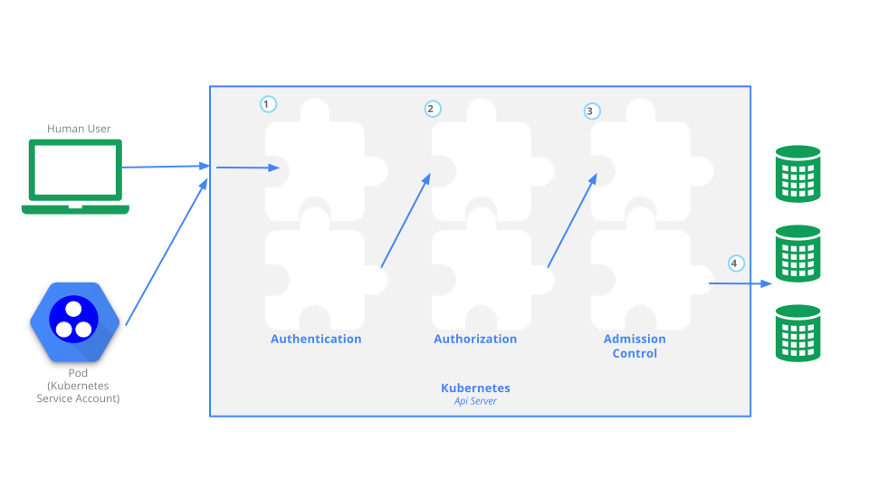{kind=link}
Authentication


Authentication strategies
X509 Client Certs
openssl req -subj "/CN=user/O=app1/O=app2" -new -key key.pemBearer Token
Authorization: Bearer $TOKENAuthentication proxy
X-Remote-User: user X-Remote-Group: app1
Authentication OIDC
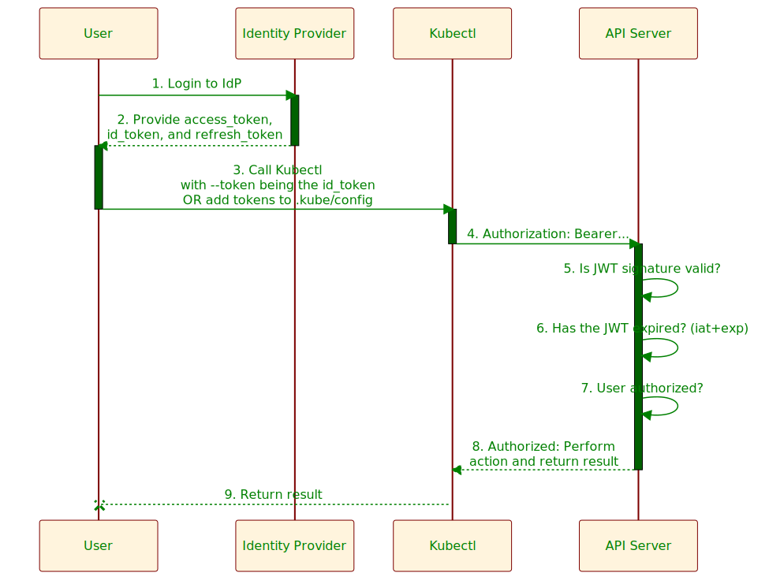{kind=link}
Authentication resources
ServiceAccount
apiVersion: v1
kind: ServiceAccount
metadata:
name: default
namespace: default
automountServiceAccountToken: false
imagePullSecrets:
- name: myregistrykey
secrets:
- default-token-r4vrbTokenRequest
$ k create token default -o yaml
apiVersion: authentication.k8s.io/v1
kind: TokenRequest
metadata:
name: default
namespace: default
spec:
audiences:
- https://kubernetes.default.svc.cluster.local
expirationSeconds: 3600
status:
expirationTimestamp: ""
token: eyJhbGciOiJSUzI1NiIsImtpZC...TokenReview
k create -o yaml -f - << EOF
kind: TokenReview
apiVersion: authentication.k8s.io/v1
spec:
token: eyJhbGc...
EOF
apiVersion: authentication.k8s.io/v1
kind: TokenReview
metadata:
creationTimestamp: null
spec:
token: eyJhbGc...
status:
audiences:
- https://kubernetes.default.svc.cluster.local
authenticated: true
user:
groups:
- system:serviceaccounts
- system:serviceaccounts:default
- system:authenticated
uid: 54228ff0-d504-4416-a870-e3de7d53dc7c
username: system:serviceaccount:default:defaultCertificateSigningRequest
cat <<EOF | kubectl apply -f -
apiVersion: certificates.k8s.io/v1
kind: CertificateSigningRequest
metadata:
name: myuser
spec:
request: LS0t...
signerName: kubernetes.io/kube-apiserver-client
expirationSeconds: 86400 # one day
usages:
- client auth
EOF
k certificate approve myuser
k get csr myuser -o jsonpath='{.status}' | jq
{
"certificate": "LS0tL...",
"conditions": [
{
"lastTransitionTime": "",
"lastUpdateTime": "",
"message": "This CSR was approved by kubectl certificate approve.",
"reason": "KubectlApprove",
"status": "True",
"type": "Approved"Authorization
Node
ABAC
RBAC
Webhook
RBAC Authorization
Role
RoleBinding
ClusterRole
ClusterRoleBinding
Authorization resources
Role
apiVersion: rbac.authorization.k8s.io/v1
kind: Role
metadata:
namespace: default
name: pod-reader
rules:
- apiGroups: [""] # "" indicates the core API group
resources: ["pods"]
verbs: ["get", "watch", "list"]ClusterRole
apiVersion: rbac.authorization.k8s.io/v1
kind: ClusterRole
metadata:
# "namespace" omitted since ClusterRoles are not namespaced
name: secret-reader
rules:
- apiGroups: [""]
resources: ["secrets"]
verbs: ["get", "watch", "list"]RoleBinding
apiVersion: rbac.authorization.k8s.io/v1
kind: RoleBinding
metadata:
name: read-pods
namespace: default
subjects:
# You can specify more than one "subject"
- kind: User
name: jane # "name" is case sensitive
apiGroup: rbac.authorization.k8s.io
roleRef:
# "roleRef" specifies the binding to a Role / ClusterRole
kind: Role #this must be Role or ClusterRole
name: pod-reader # name of the Role or ClusterRole
apiGroup: rbac.authorization.k8s.io
---
apiVersion: rbac.authorization.k8s.io/v1
kind: RoleBinding
metadata:
name: read-secrets
# This only grants permissions within the "development" namespace.
namespace: development
subjects:
- kind: User
name: dave # Name is case sensitive
apiGroup: rbac.authorization.k8s.io
roleRef:
kind: ClusterRole
name: secret-reader
apiGroup: rbac.authorization.k8s.ioClusterRoleBinding
apiVersion: rbac.authorization.k8s.io/v1
# allows anyone in the "manager" group to read secrets in any namespace.
kind: ClusterRoleBinding
metadata:
name: read-secrets-global
subjects:
- kind: Group
name: manager # Name is case sensitive
apiGroup: rbac.authorization.k8s.io
roleRef:
kind: ClusterRole
name: secret-reader
apiGroup: rbac.authorization.k8s.ioSubjectAccessReview
SubjectAccessReview
LocalSubjectAccessReview
SelfSubjectAccessReview
SubjectAccessReview
k create -f - -o jsonpath='{.status}' <<EOF | jq
---
apiVersion: authorization.k8s.io/v1
kind: SubjectAccessReview
spec:
resourceAttributes:
namespace: default
verb: get
resource: pods
version: v1
groups:
- system:masters
user: kubernetes-admin
EOF
{
"allowed": true
}SelfSubjectAccessReview
$ k auth can-i get pods
yesSelfSubjectRulesReview
k create -f - -o jsonpath='{.status.resourceRules}'<<EOF| jq
kind: SelfSubjectRulesReview
apiVersion: authorization.k8s.io/v1
spec:
namespace: default
EOF
[
{
"apiGroups": [
"*"
],
"resources": [
"*"
],
"verbs": [
"*"
]
},
...SelfSubjectRulesReview
$ k auth can-i --list
Resources Non-Resource URLs Resource Names Verbs
*.* [] [] [*]
[*] [] [*]
[/api/*] [] [get]
[/api] [] [get]
[/apis/*] [] [get]
[/apis] [] [get]
[/healthz] [] [get]
[/healthz] [] [get]
[/livez] [] [get]
[/livez] [] [get]
[/openapi/*] [] [get]
[/openapi] [] [get]
[/readyz] [] [get]
[/readyz] [] [get]
...Admission Control

LimitRange
apiVersion: v1
kind: LimitRange
metadata:
name: cpu-resource-constraint
spec:
limits:
- default: # this section defines default limits
cpu: 500m
defaultRequest: # this section defines default requests
cpu: 500m
max: # max and min define the limit range
cpu: "1"
min:
cpu: 100m
type: ContainerResourceQuota
apiVersion: v1
kind: ResourceQuota
metadata:
name: compute-resources
spec:
hard:
requests.cpu: "1"
requests.memory: 1Gi
limits.cpu: "2"
limits.memory: 2Gi
configmaps: "10"
persistentvolumeclaims: "4"
pods: "4"
secrets: "10"
services: "10"
status:
used:
configmaps: "1"
limits.cpu: "0"
limits.memory: "0"
persistentvolumeclaims: "1"
pods: "1"
requests.cpu: "0"
requests.memory: "0"
secrets: "1"
services: "1"Pod Security Standards
Privileged
Baseline
Restricted
Pod Security Admission
enforce
audit
warn
apiVersion: v1
kind: Namespace
metadata:
name: my-restricted-namespace
labels:
pod-security.kubernetes.io/enforce: restricted
pod-security.kubernetes.io/enforce-version: latest
pod-security.kubernetes.io/warn: restricted
pod-security.kubernetes.io/warn-version: latestAdmission Webhooks
ValidatingWebhookConfiguration
MutatingWebhookConfiguration
Admission Webhooks
apiVersion: admissionregistration.k8s.io/v1
kind: ValidatingWebhookConfiguration
metadata:
name: "pod-policy.example.com"
webhooks:
- name: "pod-policy.example.com"
rules:
- apiGroups: [""]
apiVersions: ["v1"]
operations: ["CREATE"]
resources: ["pods"]
scope: "Namespaced"
clientConfig:
service:
namespace: "example-namespace"
name: "example-service"
caBundle: <CA_BUNDLE>
admissionReviewVersions: ["v1"]
failurePolicy: Fail
sideEffects: None
timeoutSeconds: 5kustomize/helm


Deploy
YAML Files:
Deployment
Service
Ingress
ConfigMap
Secret
Deploy
deploy/
├── deployment.yaml
├── ingress.yaml
└── service.yaml
$ kubectl apply -f deploy
deployment.apps/app created
ingress.networking.k8s.io/app created
service/app createdKustomize
# kustomization.yaml
resources:
- deployment.yaml
- service.yaml
- ingress.yaml
namePrefix: dev-
namespace: development
commonLabels:
environment: developmentKustomize
$ kustomize build
$ kubectl kustomize
$ kubectl apply -kKustomize
deploy/
├── deployment.yaml
├── ingress.yaml
├── kustomization.yaml
└── service.yaml
$ kubectl apply -k deploy
service/dev-app created
deployment.apps/dev-app created
ingress.networking.k8s.io/dev-app createdEnvironment
Dev
Test(ift/lt)
Stage
Prod
Kustomize Overlays
deploy/
├── base
│ ├── deployment.yaml
│ ├── ingress.yaml
│ ├── kustomization.yaml
│ └── service.yaml
├── dev
│ └── kustomization.yaml
├── prod
│ └── kustomization.yaml
└── stage
└── kustomization.yamlKustomize Overlays
# deploy/dev/kustomization.yaml
resources:
- ../base
namePrefix: dev-
namespace: development
commonLabels:
environment: development
# deploy/prod/kustomization.yaml
resources:
- ../base
namePrefix: prod-
namespace: production
commonLabels:
environment: productionKustomize Overlays
$ kubectl apply -k deploy/dev
service/dev-app created
deployment.apps/dev-app created
ingress.networking.k8s.io/dev-app created
$ kubectl apply -k deploy/prod
service/prod-app created
deployment.apps/prod-app created
ingress.networking.k8s.io/prod-app createdKustomize built-ins
Transformers
Generators
Kustomize Transformers
namePrefix
nameSuffix
commonAnnotations
images
commonLabels
namespace
replicas
patches
Kustomize Generators
configMapGenerator
secretGenerator
helmCharts
Helm
Chart
Release
Repository
Helm Chart
$ helm create chart
Creating chart
$ tree chart/
chart/
├── Chart.yaml
├── charts
├── templates
│ ├── NOTES.txt
│ ├── _helpers.tpl
│ ├── deployment.yaml
│ ├── hpa.yaml
│ ├── ingress.yaml
│ ├── service.yaml
│ ├── serviceaccount.yaml
│ └── tests
│ └── test-connection.yaml
└── values.yamlHelm Chart
# chart/Chart.yaml
apiVersion: v2
name: chart
description: A Helm chart for Kubernetes
type: application
version: 0.1.0
appVersion: "1.16.0"
dependencies: []Helm Templates
apiVersion: v1
kind: Service
metadata:
name: {{ include "chart.fullname" . }}
labels:
{{- include "chart.labels" . | nindent 4 }}
spec:
type: {{ .Values.service.type }}
ports:
- port: {{ .Values.service.port }}
targetPort: http
protocol: TCP
name: http
selector:
{{- include "chart.selectorLabels" . | nindent 4 }}Helm Templates
apiVersion: v1
kind: ConfigMap
metadata:
name: {{ .Release.Name }}-configmap
data:
myvalue: "Hello World"
drink: {{ .Values.favorite.drink | default "tea" | quote }}
{{ if eq .Values.favorite.drink "coffee" }}
mug: "true"
{{ end }}
{{- with .Values.favorite }}
food: {{ .food | upper | quote }}
{{- end }}
toppings: |-
{{- range .Values.pizzaToppings }}
- {{ . | title | quote }}
{{- end }}Helm Template Objects
Release
Values
Chart
Files
Capabilities
Template
Helm Template Functions
Logic and Flow Control
String
Regular Expressions
Encoding
Math
Cryptographic and Security
and many others(github.com/Masterminds/sprig)
Helm Repo
$ helm search hub wordpress
URL CHART VERSION APP VERSION DESCRIPTION
https://hub.helm.sh/charts/bitnami/wordpress 7.6.7 5.2.4 Web publishing platform...
https://hub.helm.sh/charts/presslabs/wordpress-... v0.6.3 v0.6.3 Presslabs WordPress
https://hub.helm.sh/charts/presslabs/wordpress-... v0.7.1 v0.7.1 A Helm chart for deploy...
$ helm repo add brigade https://brigadecore.github.io/charts
"brigade" has been added to your repositories
$ helm repo list
NAME URL
brigade https://brigadecore.github.io/charts
$ helm repo update
Hang tight while we grab the latest from your chart repositories...
...Successfully got an update from the "opensearch" chart repository
Update Complete. ⎈Happy Helming!⎈
$ helm search repo brigade
NAME CHART VERSION APP VERSION DESCRIPTION
brigade/brigade 1.3.2 v1.2.1 Brigade provides event-driven scripting of...
brigade/brigade-github-app 0.4.1 v0.2.1 The Brigade GitHub App, an advanced gateway...
brigade/brigade-github-oauth 0.2.0 v0.20.0 The legacy OAuth GitHub Gateway for Brigade
$ helm show all brigade/brigade
# chart
# values
# crds
# readmeHelm Release
$ helm install grafana/grafana --generate-name \
-f values.yaml --set key=value
NAME: grafana-1684182240
LAST DEPLOYED: Mon May 15 23:24:01 2023
NAMESPACE: default
STATUS: deployed
REVISION: 1
NOTES:
...
$ helm list
NAME NAMESPACE REVISION UPDATED STATUS CHART APP VERSION
grafana-1684182240 default 1 2023-05-15 23:24:01 deployed grafana-6.56.4 9.5.2
$ helm get all grafana-1684182240
# hooks
# manifest
# notes
# values
$ helm upgrade grafana-1684182240 grafana/grafana \
--set key=value2
Release "grafana-1684182240" has been upgraded. Happy Helming!
NAME: grafana-1684182240
LAST DEPLOYED: Mon May 15 23:29:51 2023
NAMESPACE: default
STATUS: deployed
REVISION: 2
NOTES:
...
$ helm history grafana-1684182240
REVISION UPDATED STATUS CHART APP VERSION DESCRIPTION
1 Mon May 15 23:24:01 2023 superseded grafana-6.56.4 9.5.2 Install complete
2 Mon May 15 23:29:51 2023 deployed grafana-6.56.4 9.5.2 Upgrade complete
$ helm rollback grafana-1684182240 1
Rollback was a success! Happy Helming!
$ helm history grafana-1684182240
REVISION UPDATED STATUS CHART APP VERSION DESCRIPTION
1 Mon May 15 23:24:01 2023 superseded grafana-6.56.4 9.5.2 Install complete
2 Mon May 15 23:29:51 2023 superseded grafana-6.56.4 9.5.2 Upgrade complete
3 Mon May 15 23:31:50 2023 deployed grafana-6.56.4 9.5.2 Rollback to 1
$ helm uninstall grafana-1684182240
release "grafana-1684182240" uninstalledOperators
{kind=link}
Operator
Custom Resource
Control Loop
Operator
Examples:
Etcd Operator
Prometheus Operator
MySQL Operator
Custom Resources
API Aggregation
CRD
API Aggregation
apiVersion: apiregistration.k8s.io/v1
kind: APIService
metadata:
name: <name of the registration object>
spec:
group: <API group name this extension apiserver hosts>
version: <API version this extension apiserver hosts>
groupPriorityMinimum: <priority this APIService for this group, see API documentation>
versionPriority: <prioritizes ordering of this version within a group, see API documentation>
service:
namespace: <namespace of the extension apiserver service>
name: <name of the extension apiserver service>
caBundle: <pem encoded ca cert that signs the server cert used by the webhook>API Aggregation
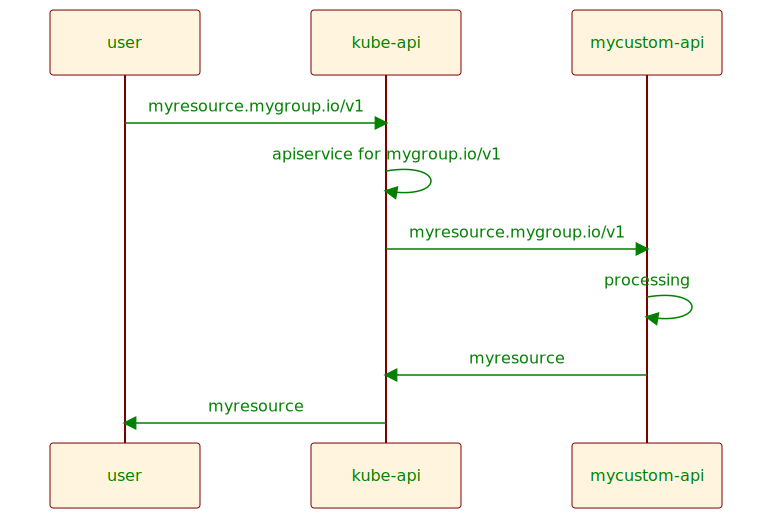{kind=link}
CRD
apiVersion: apiextensions.k8s.io/v1
kind: CustomResourceDefinition
metadata:
# name must match the spec fields below, and be in the form: <plural>.<group>
name: crontabs.stable.example.com
spec:
# group name to use for REST API: /apis/<group>/<version>
group: stable.example.com
# either Namespaced or Cluster
scope: Namespaced
names:
# plural name to be used in the URL: /apis/<group>/<version>/<plural>
plural: crontabs
# singular name to be used as an alias on the CLI and for display
singular: crontab
# kind is normally the CamelCased singular type. Your resource manifests use this.
kind: CronTab
# shortNames allow shorter string to match your resource on the CLI
shortNames:
- ct
# list of versions supported by this CustomResourceDefinition
versions:
- name: v1
# Each version can be enabled/disabled by Served flag.
served: true
# One and only one version must be marked as the storage version.
storage: true
schema:
openAPIV3Schema:
type: object
properties:
spec:
type: object
properties:
cronSpec:
type: string
image:
type: string
replicas:
type: integerOperator Pattern
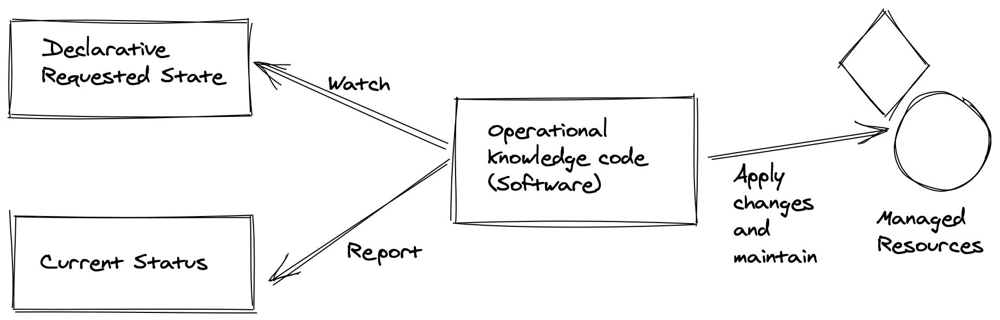{kind=link}
Operator Components

Kubernetes Clients
Officially-supported
C |
Go |
CSharp |
Haskell |
Java |
JavaScript |
Perl |
Python |
Ruby |
Kubernetes Clients
Community-maintained
Clojure |
Elixir |
Lisp |
Node.js |
PHP |
Rust |
Scala |
Swift |
DotNet |
Operator Frameworks
KUDO (Kubernetes Universal Declarative Operator)
Metacontroller (along with WebHooks that you implement yourself)
Shell-operator
Operator Frameworks
Java Operator SDK
Kopf (Kubernetes Operator Pythonic Framework)
KubeOps (.NET operator SDK)
Operator Frameworks
kubebuilder
Operator Framework
Operator Framework
BUILD: operator-sdk
MANAGE: olm
DISCOVER: operatorhub.io
Operator SDK
GO
Ansible
Helm
Operator SDK
$ operator-sdk init \
--domain example.com \
--repo github.com/example/memcached-operator
$ operator-sdk create api \
--group cache --version v1alpha1 \
--kind Memcached --resource --controller
$ ls -1
Dockerfile
Makefile
PROJECT
README.md
api/
bin/
config/
controllers/
go.mod
go.sum
hack/
main.goOperator SDK
api/v1alpha1/memcached_types.go
// MemcachedSpec defines the desired state of Memcached
type MemcachedSpec struct {
// INSERT ADDITIONAL SPEC FIELDS - desired state of cluster
// Important: Run "make" to regenerate code after modifying this file
// The following markers will use OpenAPI v3 schema to validate the value
// More info: https://book.kubebuilder.io/reference/markers/crd-validation.html
// +kubebuilder:validation:Minimum=1
// +kubebuilder:validation:Maximum=5
// +kubebuilder:validation:ExclusiveMaximum=false
// Size defines the number of Memcached instances
// +operator-sdk:csv:customresourcedefinitions:type=spec
Size int32 `json:"size,omitempty"`
// Port defines the port that will be used to init the container with the image
// +operator-sdk:csv:customresourcedefinitions:type=spec
ContainerPort int32 `json:"containerPort,omitempty"`
}
// MemcachedStatus defines the observed state of Memcached
type MemcachedStatus struct {
// Represents the observations of a Memcached's current state.
// Memcached.status.conditions.type are: "Available", "Progressing", and "Degraded"
// Memcached.status.conditions.status are one of True, False, Unknown.
// Memcached.status.conditions.reason the value should be a CamelCase string and producers of specific
// condition types may define expected values and meanings for this field, and whether the values
// are considered a guaranteed API.
// Memcached.status.conditions.Message is a human readable message indicating details about the transition.
// For further information see: https://github.com/kubernetes/community/blob/master/contributors/devel/sig-architecture/api-conventions.md#typical-status-properties
// Conditions store the status conditions of the Memcached instances
// +operator-sdk:csv:customresourcedefinitions:type=status
Conditions []metav1.Condition `json:"conditions,omitempty" patchStrategy:"merge" patchMergeKey:"type" protobuf:"bytes,1,rep,name=conditions"`
}
// Memcached is the Schema for the memcacheds API
//+kubebuilder:subresource:status
type Memcached struct {
metav1.TypeMeta `json:",inline"`
metav1.ObjectMeta `json:"metadata,omitempty"`
Spec MemcachedSpec `json:"spec,omitempty"`
Status MemcachedStatus `json:"status,omitempty"`
}Operator SDK
$ make generate
# api/v1alpha1/zz_generated.deepcopy.go
$ make manifests
# config/crd/bases/cache.example.com_memcacheds.yamlOperator SDK
controllers/memcached_controller.go
func (r *Reconciler) SetupWithManager(mgr ctrl.Manager) error {
return ctrl.NewControllerManagedBy(mgr).
For(&cachev1alpha1.Memcached{}).
Owns(&appsv1.Deployment{}).
Complete(r)
}
func (r *Reconciler) Reconcile(
ctx context.Context, req ctrl.Request,
) (ctrl.Result, error) {
// Lookup the Memcached instance for this reconcile request
memcached := &cachev1alpha1.Memcached{}
err := r.Get(ctx, req.NamespacedName, memcached)
...
}Operator SDK
$ make manifests
$ IMG=example.com/memcached-operator:v0.0.1 make docker-build
$ IMG=example.com/memcached-operator:v0.0.1 make deploy